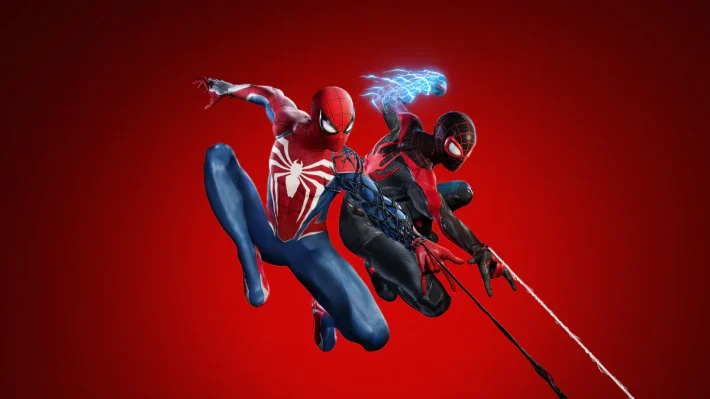

Miranha é o amigo da vizinhança
Ultimas Notícias
Homem-Aranha derrota criminosos e impede roubo em joalheria.
O Homem-Aranha derrotou criminosos e impediu um roubo em uma joalheria da cidade. A rápida ação do herói garantiu a segurança dos clientes e evitou maiores prejuízos.
Leia Mais18/02/2026
Homem-Aranha salva cidadãos de incêndio em casa abandonada.
O Homem-Aranha resgatou cidadãos presos em um incêndio em uma casa abandonada. Graças à sua coragem e agilidade, ninguém ficou ferido.
Leia Mais17/02/2026
Homem-Aranha se machuca gravemente em combate contra o simbionte Venom.
O Homem-Aranha ficou gravemente ferido após um intenso combate contra o simbionte Venom. A batalha foi marcada por grande destruição e colocou à prova a resistência do herói.
Leia Mais16/02/2026
Repórter afirma ter descoberto a identidade do Homem-Aranha.
Um repórter afirmou ter descoberto a verdadeira identidade do Homem-Aranha, causando grande repercussão na cidade. A revelação pode colocar em risco a vida pessoal do herói e de seus entes queridos.
Leia Mais15/02/2026